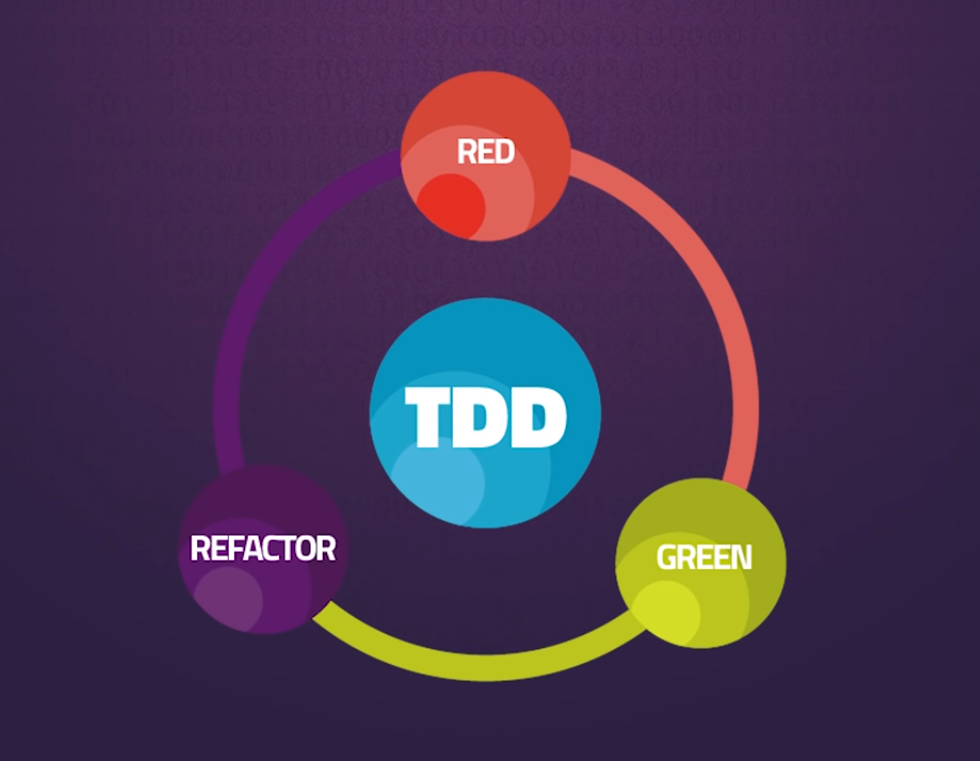

Test Driven Development
Descoberto em 2003 por kent beck o TDD
[Test Driven Development]
é uma prática de desenvolvimento de software defendido pelo eXtreme Programming
[xp]
.
O TDD trata-se do desenvolvimento orientado por testes, onde o software a ser desenvolvido é contruído baseado em testes. A ideia básica do tdd é escrever o código de teste primeiro e depois escrever apenas o suficente do código do software para passar no teste, dessa forma, os programadores se concentram no que é mais importante para o software.
Os Tdd trabalham em pequenos ciclos onde são é criados os teste para cada funcionalidade do sistema. esses testes podem ser de unidade ou testes funcionais.
- Os testes de unidade testam linhas individuais de código.
- Os testes funcionais testam uma função maior no sistema.
Ciclo de desenvolvimento
O processo de desenvolvimento com tdd é sempre: red, green e refactor.
Red
Green
Refactor

Com esse tipo de estratégia, nós temos um feedback rápido sobre as novas funcionalidades do sistema e sobre possíveis quebras de outras funcionalidades. Com isso, temos mais segurança na adição de novas funcionalidades e no processo de refatoração.
Benefícios do TDD
Seguir o desenvolvimento orientado a testes significa que o software final apresentará menos bugs, o código será de alta qualidade, e a concentração dos desenvolvedores estarão voltadas para uma única funcionalidade por vez o que possibilita feedback rápido e aumentando a produtividade do programador.
durante o desenvolvimento a criação dos testes Economiza o tempo do desenvolvedor a longo prazo, quando necessário testar uma nova funcionalidade o código teste já estará disponivel p mesmo para funcionalidades que falharam. Também ajuda o desenvolvedor a identificar erros, onde está e como está paralisando o código.
Frameworks TDD
Existem diversas ferramentas e frameworks para utilizar o tdd e algumas dessas ferramentas estão listadas a seguir:

É um framework de teste de unidade para a linguagem de programação PHP.
É uma estrutura de testes de unidade para JavaScript e Node.js.

O JUnit5 é um framework para testes de software em java. Esse framework facilita a criação e manutenção do código para a automação de testes.

A pytest torna mais fácil escrever pequenos testes, mas pode ser ajustado para suportar testes funcionais complexos para aplicativos e bibliotecas.
Katalon Studio é um software construído sob estruturas de automação selenium,com uma ide especializada para testes de aplicativos web